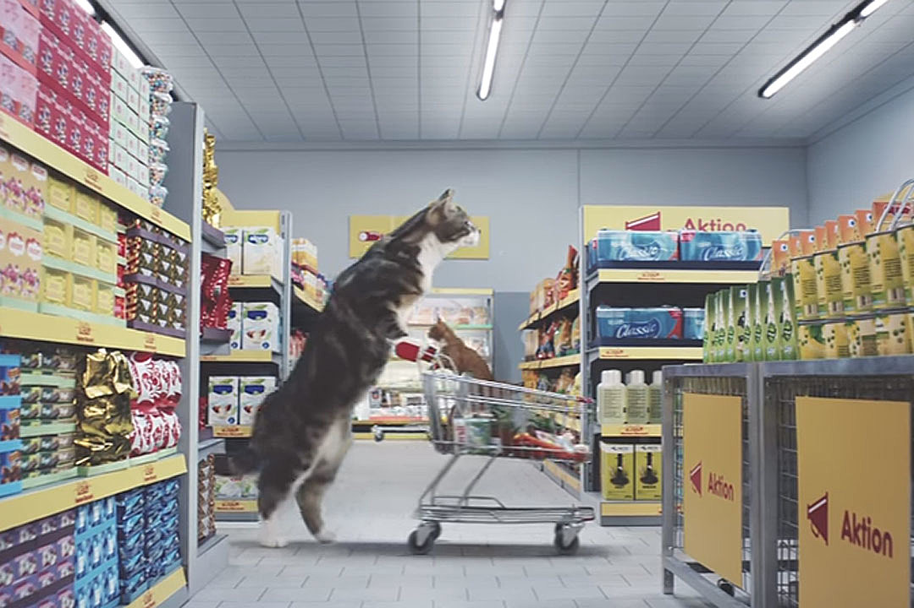

О Компании
Идею сокращения использования газа в промышленности также высказали в Финляндии. Газета Helsingin Sanomat обратила внимание, что на газ из России приходится только пять процентов общего потребления энергии.
В то же время, сложности могут возникнуть в промышленности, где газ используется как сырье. В таком случае, отрасли придется либо найти замену природному газу, либо сократить показатели.
В то же время, сложности могут возникнуть в промышленности, где газ используется как сырье. В таком случае, отрасли придется либо найти замену природному газу, либо сократить показатели. В то же время, сложности могут возникнуть в промышленности, где газ используется как сырье. В таком случае, отрасли придется либо найти замену природному газу, либо сократить показатели. В то же время, сложности могут возникнуть в промышленности, где газ используется как сырье. В таком случае, отрасли придется либо найти замену природному газу, либо сократить показатели. В то же время, сложности могут возникнуть в промышленности, где газ используется как сырье. В таком случае, отрасли придется либо найти замену природному газу, либо сократить показатели.
 В то же время, сложности могут возникнуть в промышленности, где газ используется как сырье. В таком случае, отрасли придется либо найти замену природному газу, либо сократить показатели. В то же время, сложности могут возникнуть в промышленности, где газ используется как сырье. В таком случае, отрасли придется либо найти замену природному газу, либо сократить показатели. В то же время, сложности могут возникнуть в промышленности, где газ используется как сырье. В таком случае, отрасли придется либо найти замену природному газу, либо сократить показатели. В то же время, сложности могут возникнуть в промышленности, где газ используется как сырье. В таком случае, отрасли придется либо найти замену природному газу, либо сократить показатели.
В то же время, сложности могут возникнуть в промышленности, где газ используется как сырье. В таком случае, отрасли придется либо найти замену природному газу, либо сократить показатели.
В то же время, сложности могут возникнуть в промышленности, где газ используется как сырье. В таком случае, отрасли придется либо найти замену природному газу, либо сократить показатели. В то же время, сложности могут возникнуть в промышленности, где газ используется как сырье. В таком случае, отрасли придется либо найти замену природному газу, либо сократить показатели. В то же время, сложности могут возникнуть в промышленности, где газ используется как сырье. В таком случае, отрасли придется либо найти замену природному газу, либо сократить показатели. В то же время, сложности могут возникнуть в промышленности, где газ используется как сырье. В таком случае, отрасли придется либо найти замену природному газу, либо сократить показатели.